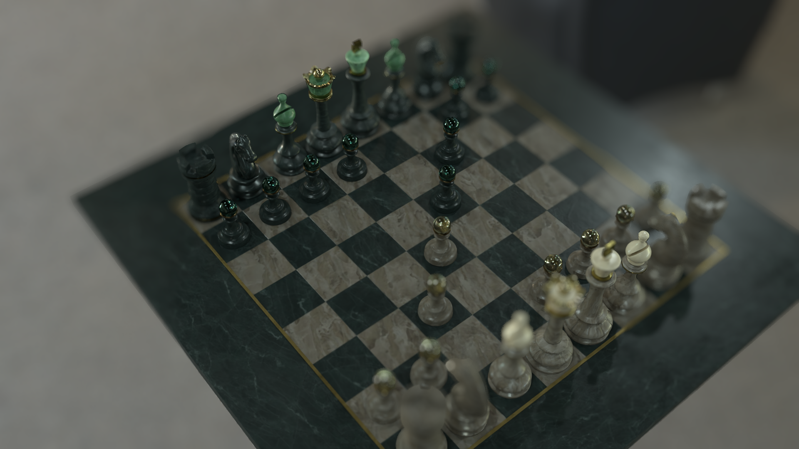

Real-Time OSL Shader Comparison & Render Lab
Interactive A/B wipe comparator, 4–6 style layer stacking, pixel-difference analysis, and multi-pass inspection suite built for production shading, look-development, and shader architecture.
Interactive A/B Comparison
Drag the slider bar or click anywhere to reveal shader variations between baseline and OSL output.


Test Custom Renders Locally (A/B Pair)
Drag & drop any two render files below (PNG, JPG, WebP) to test them live in the comparison viewer without leaving your browser.
Or click to browse local file
Or click to browse local file
Multi-Style Layer Stack (4–6 Images)
Stack, blend, solo, and compare 4 to 6 different styles, AOVs, or revisions pixel-for-pixel on top of each other.
Layer Compositing Deck
Press keys 1, 2, 3, 4, 5, 6 on your keyboard to instantly solo any styleDrop 4 to 6 Images Here at Once
Drag and drop up to 6 image files (or click to browse). They will automatically populate Style Layers 1 through 6 for instant pixel comparison.
Video Demonstration & Shader Breakdown
Watch the dynamic shader attributes, lighting response, and camera rotation in motion.
OSL Shader Execution & Lighting Response
Full demonstration of the Open Shading Language custom shader evaluation, showing ray-traced reflections, subsurface approximation, and procedural texture displacement.
Direct YouTube Link
Watch in 1080p 60fps on YouTube
Pipeline & VFX Showreel
13+ years pipeline automation overview
Add More Videos
Place an MP4 into the project folder or embed any YouTube/Vimeo player using the template comments in this file.
Project Passes & Shot Gallery
Inspect multi-pass AOVs, texture maps, and additional render angles. Click to load into comparator or enlarge.
Render 01 — Beauty Pass (OSL)
Full shader evaluation with procedural micro-roughness and energy-conserving specular distribution.
Baseline Reference
Render 01 — Baseline Reference
Original input render pass used as the ground-truth benchmark for differential shading comparison.
Upload 4–6 Renders
Add new images to images/oslviewer/ or drop them in the 4–6 layer stack above to compare.
Architecture & Technical Highlights
Engineered for high performance, accuracy, and pipeline flexibility.
1:1 Subpixel Accuracy
Zero optical distortion. All 6 layers are anchored at true 16:9 1920×1080 resolution with hardware-accelerated clipping polygons.
Multi-Style Compositor
Compare up to 6 styles on top of each other with independent opacity curves, blend modes (Difference, Multiply, Screen), and hotkey soloing.
VFX AOV & Diff Inspection
Difference blending reveals mathematical deviations between passes, ideal for regression testing shader revisions.
Pipeline Ready
Fully compatible with Maya, Houdini, Arnold, OpenUSD, MaterialX, and automated CI render verification scripts.